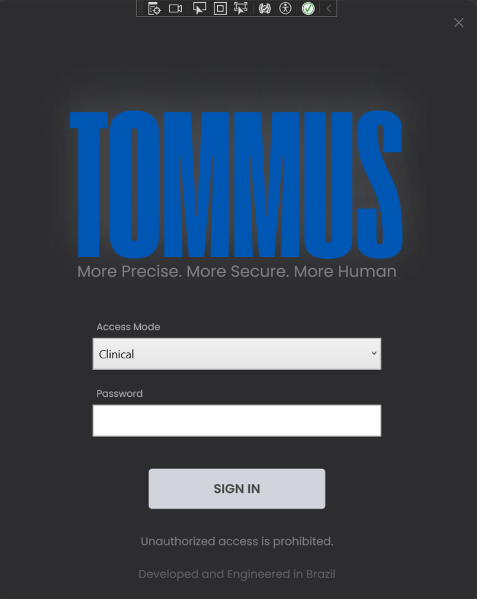
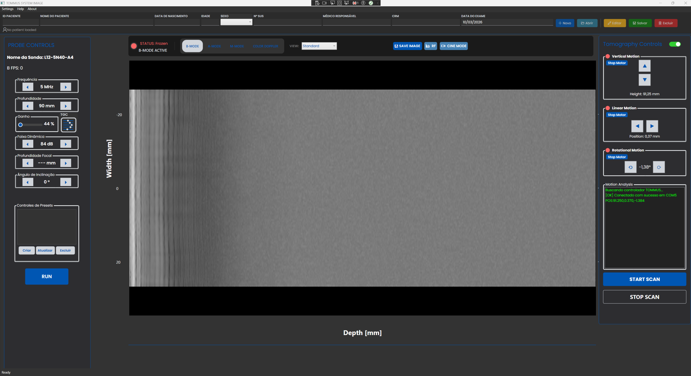
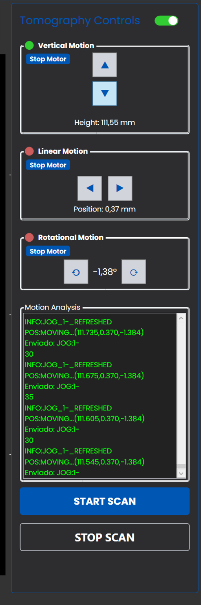
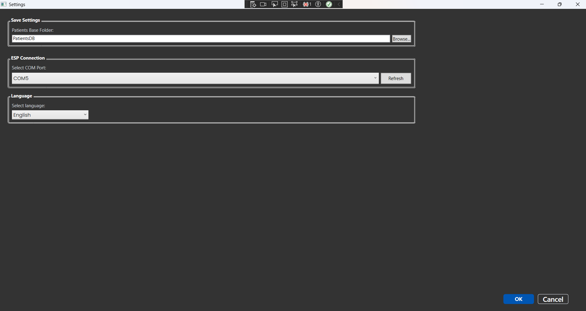

TOMMUS
IMAGE SYSTEM
✨ Project Dashboard Development | v0.0.2
🟢 Atualizado dia 11-03-2026
📑
Maturidade do Sistema
Scan Modo B
95%
Controles TGC/Ganho
100%
Controle Tomografia
90%
Exportação Modo Cine
80%
Modo Doppler
30%
Interface Modo Scan
0%
🕒
Atividades Recentes
12/03
Implementação das funcionalidades do modo Doppler. - Doppler Window
11/03
Implementação das funcionalidades do modo Doppler.
10/03
Implementação das funcionalidades do modo Doppler.
09/03
Otimização dos controles de movimento Linear, Vertical, Rotacional.
🚀
Próximos Passos
12/03 a 20/03
Finalização da integração completa do Doppler.
23/03
Implementação da funcionalidade da profundidade focal
23/03
Implementar modos de visualização do modo B
24/03 a 25/03
Implementação do modos de aquisição (A e M)
26/03
Implementação do Gráfico de RF
Em breve
Implementar tela para o modo Scan - imagem volumétrica
Em breve
Implementar controle de movimento para o Modo Scan
Em breve
Implementação de logs de sistema para diagnóstico.
Em breve
Migração progressiva para MVVM.
Em breve
Validação de Regex para campos de paciente e CPF.
Em breve
Implementar nos controles da probe a opção de selecionar qual dos transdutores estão sendo utilizados no momento
🖼️
Imagens da Interface

Tela de Login

Interface Principal

Controles

Configurações
⚠️
Alertas Técnicos
MainWindow:
Supera 5000 linhas de código (Prioridade de refatoração).
COM Objects:
Monitoramento de ReleaseComObject necessário.
Thread Affinity:
Dispatcher.Invoke requer otimização.
🛠️
Stack Tecnológica
Framework:
.NET 4.7.2 / WPF
Hardware:
Telemed Usgfw2Lib
Serial:
ESP32 Communication
Fonts:
Poppins, Extenda
📝 Atividades Diárias
🐱 Repositório GitHub
📄 Relatório Overleaf
×